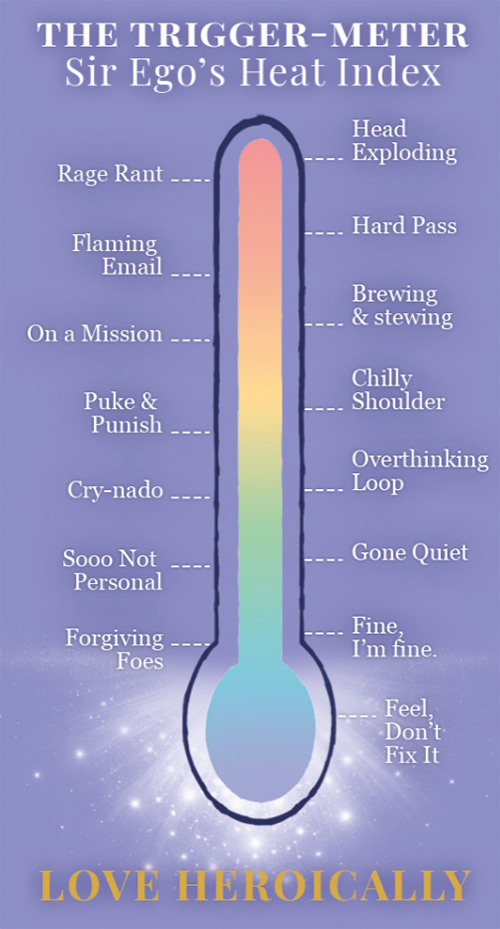
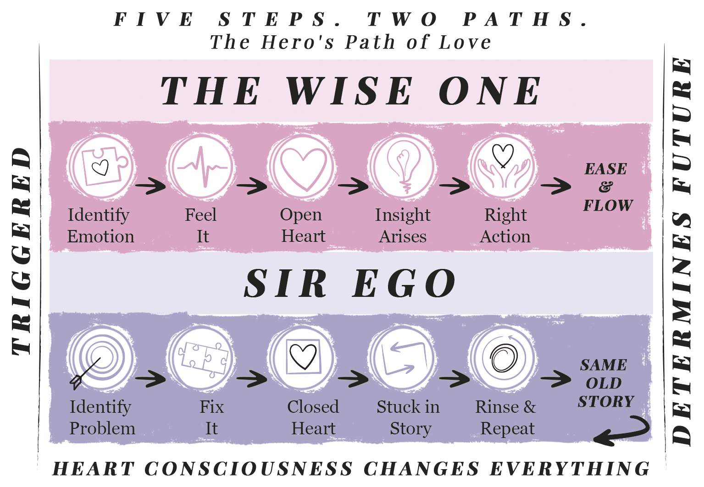
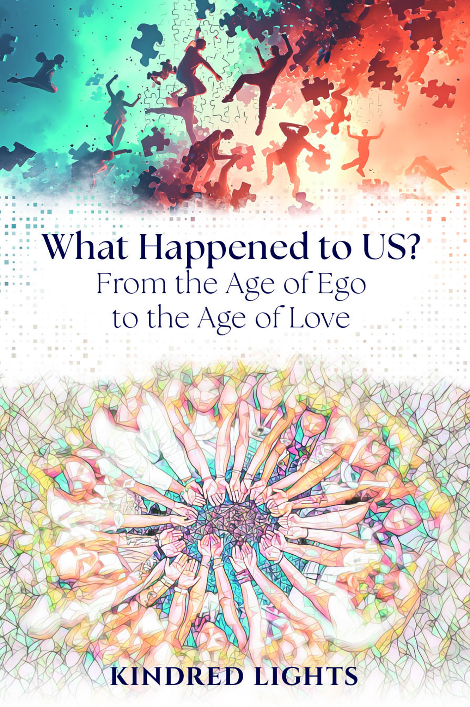

Look at that meter.
You know exactly where you are right now. Maybe it's a person. Maybe it's the news. Maybe it's that thing that keeps showing up no matter what you do.
That spot on the meter is the beginning of something. Stay with us.
Your heart is the portal.
Love is the path.
The world is on fire.
Your inbox. The news. Someone in your family. The thing that happened last Tuesday that you still haven't been able to put down. The relationship you've tried to fix and can't. The diagnosis. The bill. The headline. The person who keeps doing the thing.
And underneath all of it, the quiet exhaustion of being the one who holds it together. Who tries. Who reads the books and does the work and meditates and journals and somehow, still, here it is — the same fire, on a different Tuesday.
Here's what nobody told you: the fire is not evidence that you're broken, or that the world is broken, or that your efforts have failed. Every triggered moment — yours, theirs, the collective's — is a signal. Your Script of how things should be is colliding with what's actually unfolding. That collision has a name. It has a shape. And it has a way through.
Not by fixing the fire. Not by talking yourself out of it. By learning to read it — one triggered moment at a time — and letting your highest wisdom come through where the old reactions used to fire.
That's what the Five Steps do. It's what this whole site is about.
The wisdom went quiet. The alarm got louder.
In the moments that work — most of them — your heart is open and the wisdom flows through without effort. You say the right thing. You know what's needed. You are, without trying, exactly who you want to be.
In the moments that don't work, the heart closes to protect you from the charge building inside. And when it closes, the wisest part of you goes quiet. Still there. Just — underneath the alarm, waiting.
The Five Steps are how you turn down the alarm. In real time. In the moment. Before the familiar response runs. And when the alarm quiets, here is what becomes possible.
When the alarm fires, the heart and mind lock onto a specific solution and outcome. The reason the problem doesn't resolve is that this outcome doesn't match the unfolding reality. The mismatch is the problem — and you have an inner guide who already knows the way through.
Recognize
Right there, in the trigger, before the automatic response fires — there is a choice point. The Wise OneYour higher self. Already home. lives there. She has always been there.
Relax
These practices open your heart in the moment it wants to close — and this changes everything. The open heart allows the mental and emotional charge from the past to dissolve, and new insights, options, and responses to arise.
Release
Every persistent trigger is held in place by a false belief about your true nature. As the heart opens and the charge moves through, the light of the Wise OneYour higher self. Already home. illuminates what was hiding underneath — and it dissolves.
Receive
Returned to your open-hearted self, you are present in the moment, attuned to others, confident in your words and actions. You don't have to manufacture this. It arises naturally — because the only thing that was ever blocking it was the closed heart.
Respond
The clouds were never the sky. When the mental and emotional weather clears, what remains is the light you came here with. Your most noble self — simply present. Remembered.
Realize
Two paths through every triggered moment. The bottom row is the loop most of us run on autopilot — identify the problem, try to fix it, heart closes, stuck in the story, rinse and repeat. The top row is the alternative — identify the emotion, feel it, heart opens, insight arises, right action follows. Same trigger. Different outcome. The difference is whether the heart is open.

Describe something not moving in your life — two sentences. The Map Minder reads Sir EgoYour ego. The hero with the wrong map.'s script, names your KarmariculumYour soul's custom lesson plan., and walks you through what the Wise One sees.
Meet Your Map Minder ✦ Free · Five minutes · No account requiredKindred Lights
Mapmaker
Addiction. A teenager in crisis. Years inside a relationship that dismantled reality.
These practices were built in that fire — in custody courtrooms, in supervised visitation rooms, in ten thousand ordinary moments where everything in me wanted to burn it all down and something quieter said: open your heart. I'll show you what to do.
The jail floor. The custody courtroom. The supervised visits. All of it curriculum, precisely delivered.
Twenty years of sobriety. Three children thriving. A Thanksgiving table rebuilt from wreckage — including a seat for the man who had once been the adversary. That is what the Five StepsRecognize. Relax. Release. Receive. Respond. made possible. The actual table.
Read the Full Story →Good things. Things that made sense, that gave you language for what was happening, that helped — for a while. And then the moment arrived, the real one, and the tools weren't there.
This is different in a specific way.
Most approaches work on the ego from the outside — better thoughts, better language, better frameworks. And Sir Ego takes all of that in, gets very sophisticated about it, and then does exactly what he always did when the alarm fires. Because the alarm doesn't care about frameworks. It fires first and asks questions never.
The Five Steps work from the inside, in the moment, on the nervous system. They don't ask Sir Ego to be better. They ask him to step aside — just for a moment — so the part of you that already knows what to do can come through.
The trigger is the door, not the problem.
Follow it all the way down to the buried belief underneath. When that belief dissolves, the trigger loses its charge. Permanently. The trigger was never the enemy. It was the map.
It works right now.
In the activated moment, with the freight train already moving. That's exactly when and where the Five Steps were built — on a jail floor, in a custody courtroom, in the ten seconds before the email gets sent.
Your radiant essence shines when the clouds of ego blockages and triggers are permanently released.
This is true transcendence — something you uncover, not something you achieve or perform or manufacture. The light was always there. The practice clears the way.
He wrote it before he had the language to question it — from childhood, from early wounds, from everything he decided he needed to do to stay safe and loved. It runs automatically, beneath every reaction. And it collides, constantly, with the deeper intelligence that's actually running your life. That collision is the trigger. Every time.
Sir Ego is noble. He is a brave knight who said yes to the adventure of incarnation and has been doing his absolute best ever since — with incomplete information and a script he wrote himself. He is the hero. His map is incomplete.
The Wise One is you, operating from your truest nature. One foot in the eternal, one foot in this particular life. She keeps the master plan. She sees the perfection in every curveball. The moment Sir Ego quiets, even a little, she is already speaking.
Your soul's custom-designed blueprint for this lifetime — your birth circumstances, your soul contracts, your life lesson plan, chosen by you and your soul team before you arrived. Lovingly chosen, precisely calibrated. When you see your life through this lens, the shame dissolves. What remains is the story of a brave soul on a remarkable quest.
A word about surrender — because Sir Ego will misread it.
This isn't surrender to the world, to another person, or to defeat. It's Sir Ego handing the wheel to the wisest part of himself. He's still on the quest. The Wise One is the cause he was always looking for — he just had the wrong map.
And the wounds he's been carrying? They were never breaks. They were blockages — energy that never finished moving, beliefs that never had solid ground. The Five Steps move that energy. Permanently.
What's underneath was never damaged.
It was always radiant. It was always whole.
It was always him.
If what brought you here was something happening in your own life — a relationship, a pattern, a moment on the floor of your own making — Love Heroically is for you. The Five Steps told through the fire that forged them.
If what brought you here was watching the world come apart and needing a framework that makes sense of it — What Happened to US? is for you. The Age of Ego seen clearly, and the Age of Love already rising.
Neither one requires the other. Both lead home.

Something happened to us. All of us. There is a reason everything feels like it's coming apart. And the reason is more interesting than you think.
"Thoughtful, engaging, and a beautiful symphony of hope within the struggle of life." — Hollywood Book Reviews
Learn More →You know what to do. You've done the therapy. And you still blow it in the moment. What if the moment just before the freight train leaves the station is actually a choice point?
"She is humble and accepting within her inner peace — and above all, you trust her intentions to teach." — Pacific Book Review ★ Notable Book
Learn More →"I was witness to one of the most profound transformations I have ever seen occur in a person. You cannot read this book without being changed for the better by it."
"Here is a teacher who believes in you."
"A beautiful symphony of hope within the struggle of life — a must-read."
"If you will read only one self-help book — or one memoir — this year, make it this one."